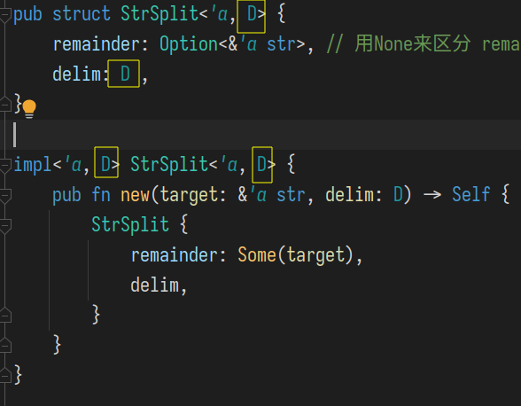

Rust 生命周期杂记
实现简单的字符串分隔功能
1cargo new --lib strsplit
在lib.rs中添加:
x1// #![warn(missing_debug_implements,missing_docs,rust_2018_idioms)]2
3pub struct StrSplit {4 // ...5} 6 7impl StrSplit {8 pub fn new(target: &str, delim: &str) -> Self9 { 10 // .. 11 }12}13
14impl Iterator for StrSplit {15 type Item = &str; 16 fn next(&mut self) -> Option<Self::Item> {17 // .. 18 } 19}20 21
22fn it_works(){24 let s = "a b c d e";25 let letters = StrSplit::new(s," ").into_iter().collect::<Vec<&str>>();26 //eprintln!("{:?}", letters);27 assert_eq!(letters, vec!["a","b","c","d","e"]);28}
为struct添加两个字段, 一个表示分隔符, 另一个表示剩下的字符串.
xxxxxxxxxx41pub struct StrSplit{2 remainder: &str, 3 delim: &str,4}我们不需要一次性将字符串分隔为字符串序列, 而是当每次调用next()时返回下一个子串即可.
xxxxxxxxxx171pub fn next(&mut self) -> Option<Self::Item> {2 3 if let Some(pos) = self.remainder.find(self.delim) { 4 5 let until_pos = self.remainder[..pos] ; 6 let rest_pos = pos+ self.delim.len();7 self.remainder = self.remainder[(rest_pos)..] ;8 Some(until_pos)9 10 } else if self.remainder.is_empty() {11 None 12 } else {13 let final = self.remainder;14 self.remainder = ""; 15 Some(final)16 }17}上面代码的整体逻辑已经完成了, 但却无法通过编译, 因为缺乏生命周期声明.
'_表示让编译器自行推断生命周期.
xxxxxxxxxx91fn foo<'a,'b>(x:&'a str, y :&'b str) -> &'a str {2 3}4// 等价于: 5
6fn foo (x:&str, y :&'_ str) -> &'_ str {7 // 返回类型上的 '_ 表示让编译器自行推断生命周期. 8 // 而参数的类型中的 '_ 表示此引用的生命周期是任意的.(不关心此生命周期) 9}'a 表示一种生命周期, struct中的'a表示, struct StrSplit 具有生命周期 'a , 若其两个(引用)字段的声明周期也是'a
impl中的new()要使用上面声明的生命周期参数, 表示当引用参数的声明周期均为 'a 时 , 则其创建的StrSplit也具有生命周期'a
添加生命周期后的代码:
xxxxxxxxxx341pub struct StrSplit<'a>{2 remainder: &'a str,3 delim: &'a str ,4} 5
6impl<'a> StrSplit<'a> {7 pub fn new(target:&'a str, delim:&'a str) -> Self {8 StrSplit {9 remainder: target,10 delim,11 }12 }13}14
15impl<'a> Iterator for StrSplit<'a> {16 type Item = &'a str ;17 fn next(&mut self) -> Option<Self::Item> {18
19 if let Some(pos) = self.remainder.find(self.delim) { 20 21 let until_pos = &self.remainder[..pos]; // ref !! 否则返回的是 str 类型 22 let rest_pos = pos + self.delim.len();23 self.remainder = &self.remainder[rest_pos..]; // ref !!24 Some(until_pos)25 } else if self.remainder.is_empty() {26 None // bug <<---------------------+27 } else { // |28 let final_part = self.remainder; // |29 self.remainder = "" ; // -----------+30 Some(final_part)31 }32
33 }34}但这段代码的实现是有问题的. 当我们将remainder消耗完后, 将其置为空串"", 但存在一种边界情况, 即分隔符在字符串的末尾: "hello world#". 此时的切分结果应该是 ["hello world", ""] .但上面的代码无法区分最后剩下一个空串还是已经将remainder消耗完这两种情况. 因此我们要修改struct中的字段类型, 使得它能表达出"空"的含义, 从而不和空串发生冲突.
使用类型 Option<>, 其中的None 能表达出空的语义 :
xxxxxxxxxx371pub struct StrSplit<'a>{2 remainder: Option<&'a str>,// 用None来区分remainder被耗尽后的None, 3 delim: &'a str , // OR 字符串恰好剩下空串Some("") 4}5
6impl<'a> StrSplit<'a> {7 pub fn new(target:&'a str, delim:&'a str) -> Self {8 StrSplit {9 remainder: Some(target) ,10 delim,11 }12 }13
14}15
16impl<'a> Iterator for StrSplit<'a> {17 type Item = &'a str ;18 fn next(&mut self) -> Option<Self::Item> {19 match self.remainder20 { // remain : &str 21 Some(remain) =>22 if let Some(pos) = remain.find(self.delim)23 {24 let until_pos = &remain[..pos]; // ref !!25 let rest_pos = pos + self.delim.len();26 self.remainder = Some(&remain[rest_pos..]) ; // ref !!27 Some(until_pos)28 }29 else30 {31 self.remainder = None ;32 Some(remain)33 },34 None => None35 }36 }37}
模式中的 ref mut
等号右侧的类型是 Option<&'a str>
若对remainder不加任何修饰, 则其脱去Some后的类型是 &'a str'

因为在此处self是一个可变借用( 的解引用 ) , 因此可以让remainder作为一个可变借用 (而不仅仅是一个不可变借用) , 因此在其前面加上修饰 ref mut, 使其类型为 &mut &'a str' , 即 &mut remainder的类型, 对remainder的可变借用.
在这里为什么将 可变引用&mut / 不可变引用& , 写成 ref mut和 ref 呢 ?
因为前者在模式匹配里是作为"模式串"的一部分, 而不修饰变量. 注意下面产生的不同类型:
下面这两类写法是等价的:

Option<T>和?
因为next()的返回类型为 Option<> , 并且其实现中存在模式:
xxxxxxxxxx161if let Some(...) = option_expr {2 // code...3 return Some(..)4} else {5 None 6}7
8/** OR */ 9
10match option_expr {11 Some(...) =>{ 12 // code...13 return Some(..)14 },15 None => None16}这种模式可以用?进行简化为 :
xxxxxxxxxx41let v = option_expr?;2
3// code... 4return Some(..);问号?的作用是:
- 若此
Option类型的值为Some(x), 则将x赋值给v; - 若值为
None, 则会改变控制流, 提前return None;
Option.as_mut()
as_mut() : &mut Option<T> Option<&mut T>
as_mut 是一种可变借用Some() 中的值的快捷方法.
&str 和 String
str表示一个字符序列, 其长度未知.
而&str是一个 fat pointer : 它不仅包含了str的起始地址, 还记录了其长度.
String具有一个在heap上分配内存的vec<u8> , 很容易得到其字符序列的起始地址, 以及长度, 因此很容易将其转换为 &str. 但反过来的转换就有比较大的开销, 因为&str所指向的字符序列不一定存储在heap中, 因此需要将其逐个拷贝到heap中.

struct中的多个生命周期
until_char(&'x str, char) -> &'x str

在这个函数的实现中, new()的调用是出错的, 原因在于new()中的两个借用的生命周期被期望是一样的, 而在这个例子中的两个参数, s的生命周期显然要>= &delim , delim会在退出词法作用域后被drop. new()为了遵守两个作为输入的借用的生命周期是一致的, 会取生命周期较短的那个作为返回值(struct)的生命周期, 进而作为next()的返回值(Option<&'a str>) 的生命周期. 最后将Option中的借用作为整个函数的返回值.
换句话说, 返回值的生命周期和delim这个局部变量相同, 即返回了一个对已被drop对象的借用 ! 这自然是不被允许的.
如何解决这个问题?
我们需要仔细考虑返回的借用的源头, next()返回值的生命周期来源于struct的生命周期, 而struct的来源于它的两个借用类型的字段的声明周期: 都是 'a .

但根据next的语义, 其返回的被分隔字符串的一部分, 其实仅仅需要将其生命周期和remainder关联起来, 而不需要和delim的生命周期产生关系.因此我们要将隐含的假设: remainder和delim的生命周期是相同的 去掉.
xxxxxxxxxx381pub struct <'a,'b>{2 remainder: Option<&'a str> , // 用None来区分 remainder被耗尽后的None, 以及字符串恰好剩下空串Some("")3 delim: &'b str ,4}5
6impl<'a,'b> StrSplit<'a,'b> {7 pub fn new(target:&'a str, delim:&'b str) -> Self {8 StrSplit {9 remainder: Some(target) ,10 delim,11 }12 }13
14}15
16impl<'a,'b> Iterator for StrSplit<'a,'b> {17 type Item = &'a str ;18 fn next(&mut self) -> Option<Self::Item> {19 match self.remainder20 {21 Some( remain) =>22 if let Some(pos) = remain.find(self.delim)23 {24 let until_pos = &((*remain)[..pos]); // ref !!25 let rest_pos = pos + self.delim.len();26 self.remainder = Some(&remain[rest_pos..]) ; // ref !!27 Some(until_pos)28 }29 else30 {31
32 self.remainder = None ;33 Some(remain)34 },35 None => None36 }37 }38}xxxxxxxxxx91fn until_char(s:&str, ch: char) -> &str {2 let delim = format!("{}",ch); // format()中在heap中创建了新字符串. 3 StrSplit::new(s,&delim).next().expect("err")4}5
6fn test_until_char(){8 assert_eq!(until_char("hello",'o'),"hell");9}
生命周期间的关系
描述多个生命周期之间的关系, 用 : , 表示>=

省略无用的生命周期注解:

对Option<>类型应用 map()
可以对Option类型直接使用map来操作其中包裹的值.
xxxxxxxxxx91 println!( "{:?}" , Some(0).map(|i| {2 if i == 0 { 100 }3 else { i }4 })); // Some(100)5///////////////////////////////////////6 println!( "{:?}" , None.map(|i| {7 if i == 0 { 100 }8 else { i }9 })); // None
find(匿名函数): 查找容器/序列中的元素
计算字符长度len_utf8()
xxxxxxxxxx51 let s = "你好世界" ;2
3 for (i,c) in s.char_indices() {4 eprintln!("{}->{}:{}",i , c ,c.len_utf8());5 }xxxxxxxxxx410->你:323->好:336->世:349->界:3
使用被trait约束的泛型做进一步抽象
上面的 until_char() 方法是为了处理分隔符为字符类型时的情况, 因为我们定义的struct StrSplit中将分隔符类型写死为 &str.
因此有一个能消除until_char()的方法,就是将分隔符类型变为泛型. 并为这种泛型添加trait约束, 这种trait的功能要和先前&str 类型的分隔符被使用的功能是一样的.

对struct定义的修改是很容易的. 但Iterator的实现中就要使用delim特质了!
那么限制泛型D的trait Delim应该实现为什么呢?
首先最直接的思路就是将报错标红的两处所用到的功能添加到trait中:
一个是转换为字符串, 另一个是返回分隔符的长度.
但这种方式就和之前的until_char的实现类似, 一定有一步要将类似char这种分隔符通过format()创建一个新的字符串并返回, 对其主要目标: "分隔字符串为序列" , 来说不是必须的一步.
因此我们看标红处所做计算的目的, 一个是为了得到pos, 另一处是为了 until_pos, 分别是分隔符所在的开始位置, 和分隔符后的首个字符位置. 因此我们的trait其实只要提供这两个位置就行了.

next_delim_trim(): "下一个分隔符所在范围"
因为存在目标串中已经不包含分隔符的情况, 因此返回值要用 Option<> 包裹起来

简单测试一下:
xxxxxxxxxx21 assert_eq!(StrSplit::new("helloo", "oo").next().expect("err"), "hell");2 assert_eq!(StrSplit::new("hello", 'o').next().expect("err"), "hell");
为何不能直接定义
str类型的变量?因为这种变量拥有数据的所有权, 因此会在退出词法作用域时drop其拥有的数据, 而这种str类型的数据存放在只读的数据段, 不能被drop.